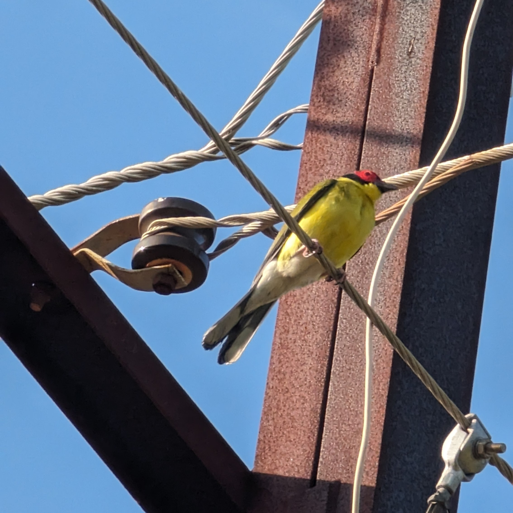
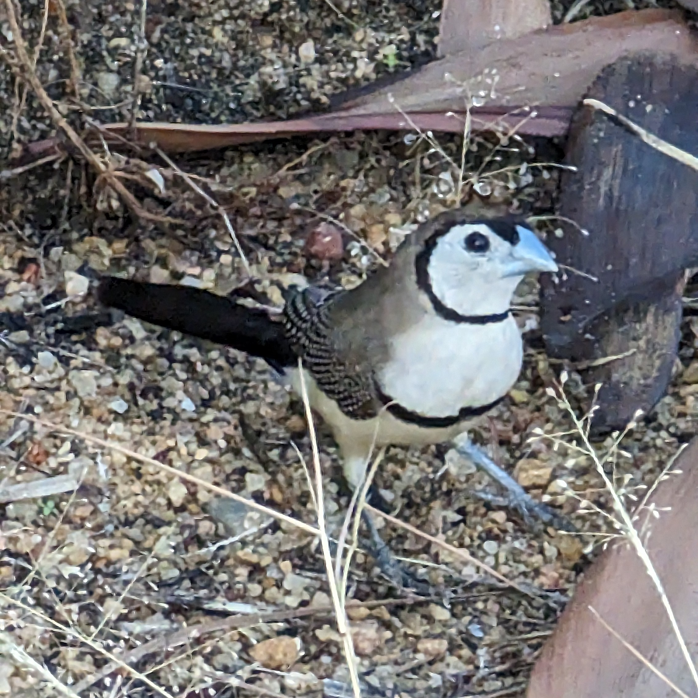
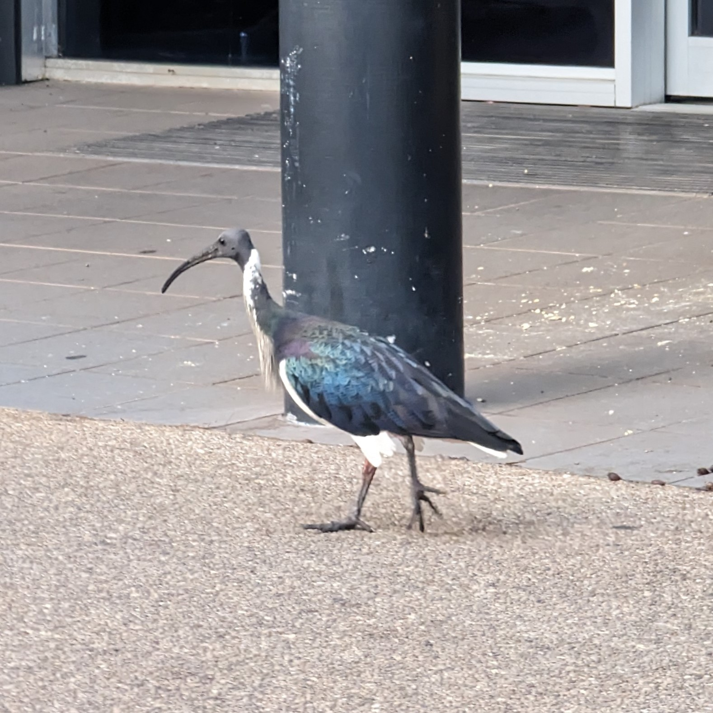
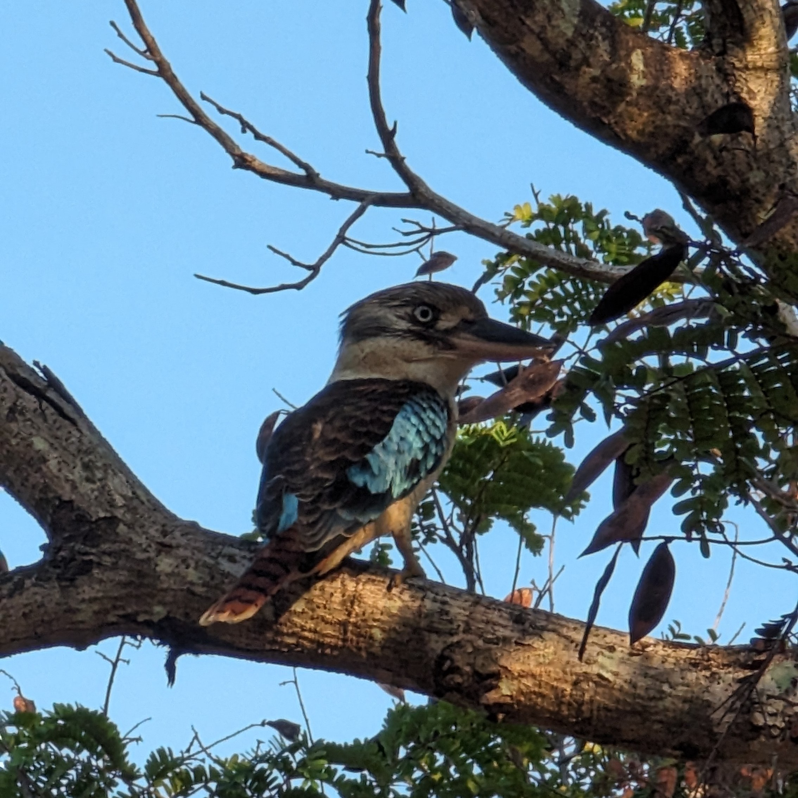
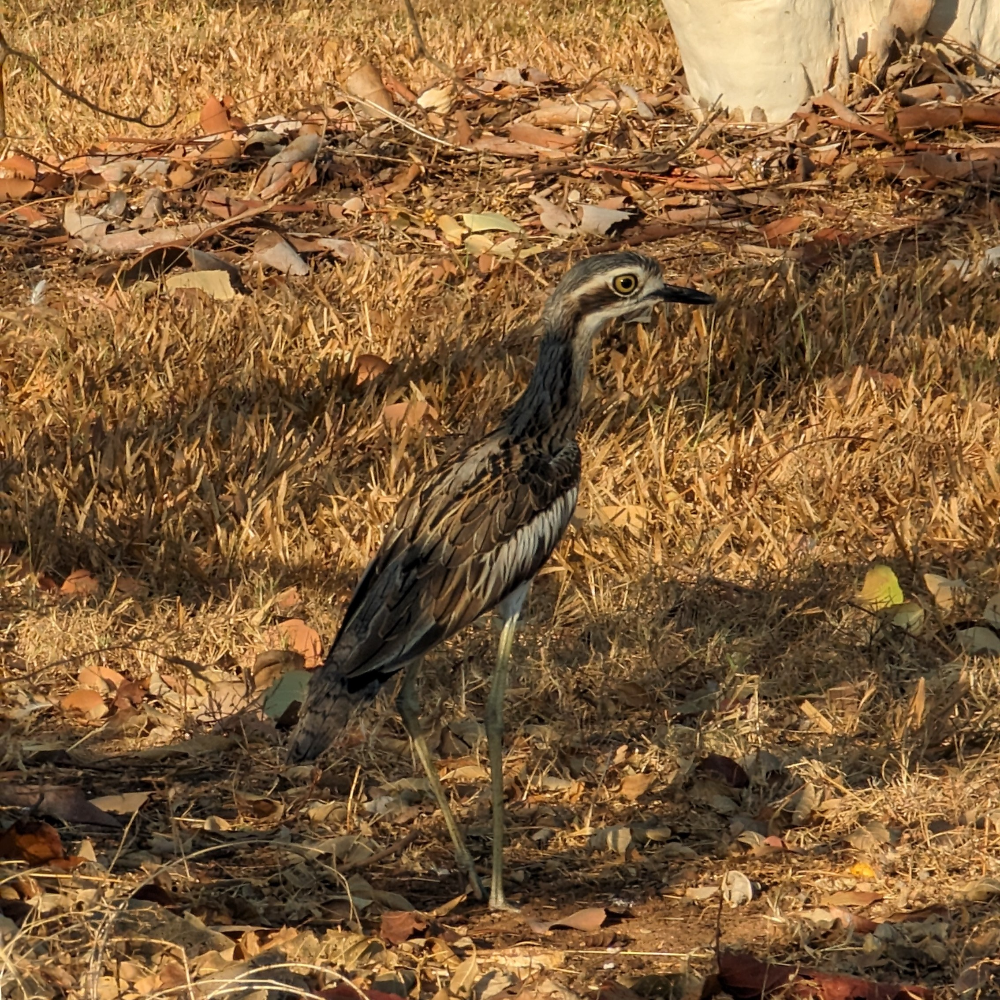
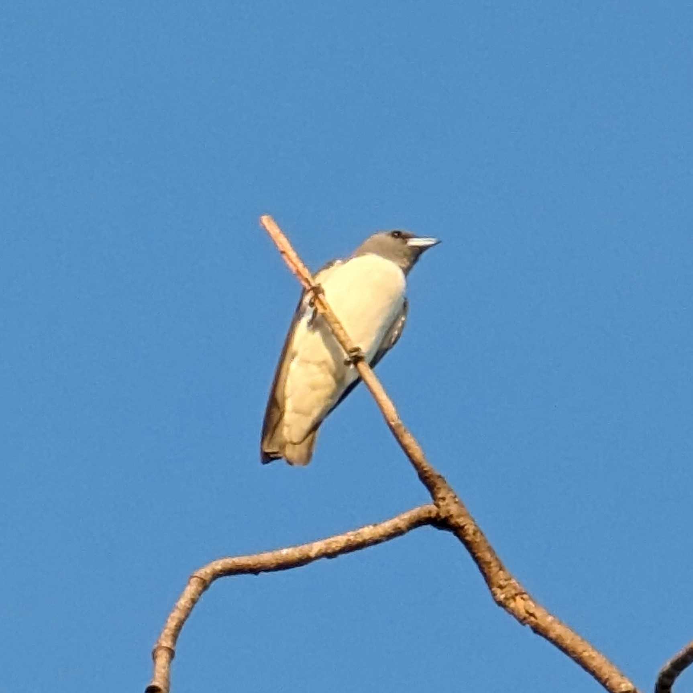
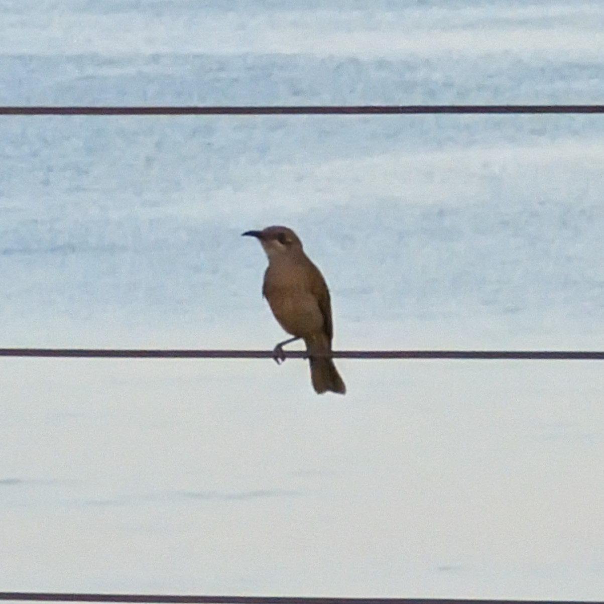
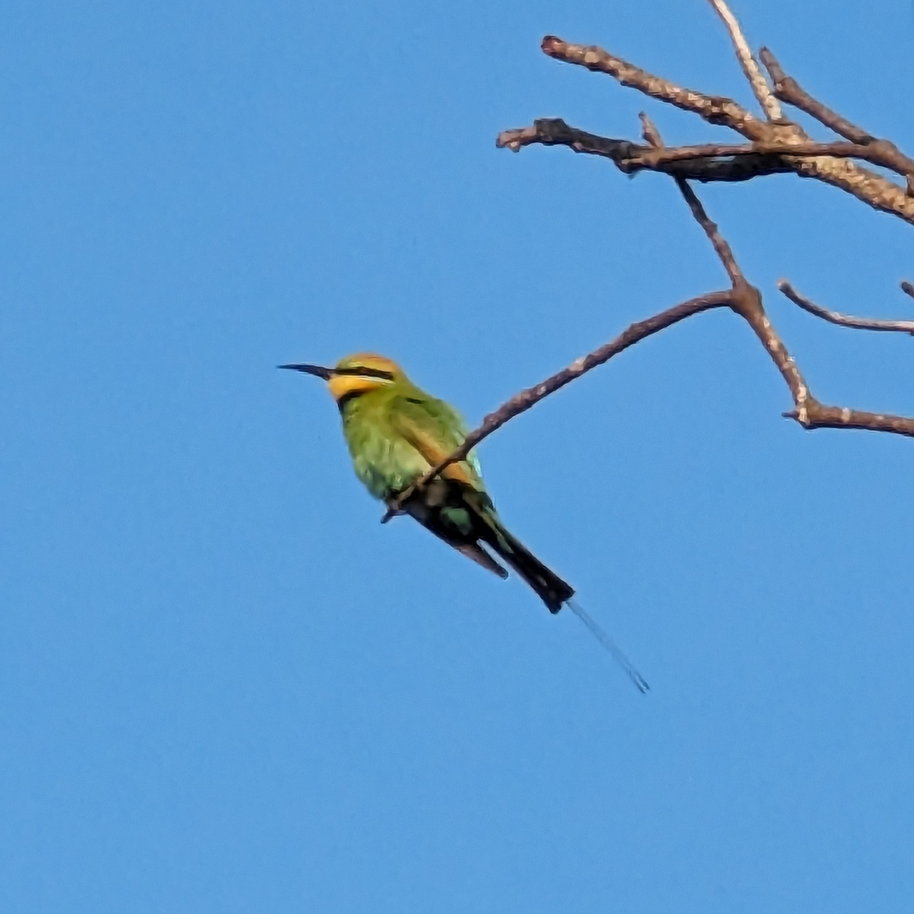

Conference: Ecological Society of Australia 2023
Everytime I go to a conference I’m always amazed at the wide diversity of both people and work that’s being done in ecology. It’s both a humbling and inspiring moment for me.
At ESA2023 I was given the opportunity to talk about the project I’d been working on at the Research Centre for Ecosystem Resilience at the Botanic Gardens of Sydney. The number of people that came up to talk about the work, and to tell me that my talk went well was heart touching.
Thanks for having me and helping us spread the word about restore and renew to those who need it! #ESAus23 @EcolSocAus pic.twitter.com/xn9YxM2emK
— Karina Guo (she/her) (@dandy_gumnut) July 5, 2023
I’ll always be grateful for the networking that was made possible by such events. I’ve met people I never thought I would come into contact with. People who have been in the field for decades, to people who are just like me. Regardless, of their ages they’ve become a familiar face in this sea of unknown. Conversations with them, (gifts even!), will be something I cherish for long.
Other than that, wow Darwin offered so many beautiful sunsets and sunrises. The number of beaches in a walkable distance was definitely appreciated. Going for a morning run to visit a new beach each morning was amazing for my mental health (and probably physical with how much I ate, I still can’t say no to free food). I’m glad I even had time to go bird spotting even with my busy schedule, they were absolutely gorgeous with their colourful plumes.







